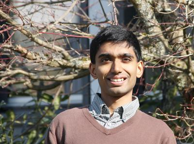

Akhil Mathew
Professor
Department of Mathematics,
University of Chicago
5734 S.
University Ave., Chicago, IL 60637-1514
Email: amathew (at) math (dot) uchicago (dot) edu
Office: 250 Ryerson Hall
Research interests: homotopy theory and arithmetic geometry
Workshop
on Local Systems and Monodromy April 6, 2025.
Midwest Topology Seminar, Nov. 2-3, 2024.
There was an informal workshop on p-adic geometry at UChicago, September 16--20, 2024. For more information see the conference website. Recordings of (most of) the lectures are available
here.
FRG workshop, Jan. 12, 2025.
Teaching
Papers and preprints
- Sheared Witt Vectors, with Bhargav Bhatt and Vadim
Vologodsky.
- The mod p Riemann-Hilbert correspondence and the perfect site.
Tunis. J. Math. 5 (2023), no. 2, 369--403.
- The K-theory of perfectoid rings, with Benjamin Antieau and Matthew Morrow.
Doc. Math. 27 (2022), 1923--1952.
- Syntomic complexes and p-adic
étale Tate twists, with Bhargav Bhatt.
Forum Math. Pi 11 (2023), E1.
- K-theory and polynomial functors,
with Clark Barwick, Saul Glasman, and
Thomas Nikolaus.
- Some recent advances in topological Hochschild homology.
Bull. Lond. Math. Soc. 54 (2022), no. 1, 1-44.
- Descent and vanishing in
chromatic algebraic K-theory via group actions, with Dustin Clausen, Justin Noel, and Niko Naumann.
Annales Sciéntifiques de l'École Normale Supérieure
57 (2024), no. 4, 1135--1190.
- Purity in chromatically localized K-theory, with Markus Land, Lennart Meier, and Georg Tamme.
J. Amer. Math. Soc. 37 (2024), no. 4, 1011--1040.
- On K(1)-local TR.
Compos. Math. 157 (2021), no. 5, 1079--1119.
- On the Beilinson fiber square, with Benjamin Antieau, Matthew Morrow, and Thomas Nikolaus.
Duke Math J. 171 (2022), no. 18, 3707--3806.
- Remarks on K(1)-local K-theory, with Bhargav Bhatt and Dustin Clausen. Selecta Mathematica. (N.S.) 26 (2020), no. 3, Paper No. 39, 16pp.
- Faithfully flat descent of almost perfect complexes in rigid geometry. J. Pure Appl. Algebra 226 (2022), no. 5, Paper No. 106938 .
- Counterexamples to Hochschild-Kostant-Rosenberg in characteristic p, with Benjamin Antieau and Bhargav Bhatt. Forum Math. Sigma. 9 (2021), Paper No. e49, 26pp.
- Hyperdescent and étale K-theory, with Dustin Clausen. Invent. Math. 225 (2021), no. 3, 981--1076.
- Deformation theory and partition
Lie algebras, with Lukas
Brantner. To appear in Acta Math.
- The arc-topology, with Bhargav Bhatt. Duke Math. J. 170 (2021), no. 9, 1899--1988.
- Revisiting the de Rham-Witt complex, with Bhargav Bhatt and Jacob Lurie. Astérisque, No. 424, (2021).
- K-theory and topological cyclic
homology of henselian pairs, with Dustin
Clausen and Matthew
Morrow.
J. Amer. Math. Soc. 34 (2021), 411--473.
- Kaledin's degeneration theorem and topological Hochschild homology. Geom. Topol. 24 (2020), no. 6, 2675--2708.
- On the Blumberg-Mandell Künneth theorem for TP, with Benjamin Antieau and Thomas Nikolaus. Selecta Mathematica N.S. 24 (2018), no. 5, 4555--4576.
- Monadicity of the Bousfield-Kuhn
functor, with Rosona Eldred, Gijs Heuts, and Lennart Meier.
Proc. Amer. Math. Soc. 147 (2019), no. 4, 1789--1796.
- Examples of descent up to nilpotence.
Geometric and topological aspects of the representation theory of finite groups, 269--311, Springer Proc. Math. Stat., 242, Springer, Cham, 2018.
-
A short proof of telescopic Tate vanishing, with Dustin Clausen. Proc. Amer. Math. Soc. 145 (2017), no. 12, 5413--5417.
-
Descent in algebraic K-theory and a conjecture of Ausoni-Rognes, with Dustin Clausen,
Niko Naumann and Justin Noel. J. Eur. Math. Soc. (JEMS) 22 (2020), no.4, 1149--1200.
-
Torus actions on stable module categories, Picard groups, and localizing subcategories (last updated Dec. 2015).
-
Picard groups of higher real K-theory
spectra at height p-1, with Drew
Heard and Vesna Stojanoska. Compos. Math. 153 (2017), no. 9, 1820--1854.
-
Derived induction and restriction theory, with Niko Naumann and Justin Noel.
Geom. Topol. 23 (2019), no. 2, 541--636.
-
Nilpotence and descent in equivariant stable homotopy theory, with Niko Naumann and Justin Noel.
Adv. Math. 305 (2017), 994--1084.
-
THH and base-change for Galois extensions of ring spectra.
Algebr. Geom. Topol. 17 (2017), no. 2, 693--704.
-
Residue fields for a class of
rational E_\infty-rings and applications.
J. Pure Appl. Algebra 221 (2017), no. 3., 707--748.
-
The Picard group of topological modular forms via descent theory, with Vesna Stojanoska. Geom. Topol. 20 (2016), no. 6, 3133--3217.
-
Torsion exponents in stable homotopy and the Hurewicz homomorphism.
Algebr. Geom. Topol. 16 (2016), no. 2, 1025--1041.
-
The homology of tmf. Homology Homotopy Appl. 18 (2016), no. 2., 1--29.
-
The Galois group of a stable homotopy
theory. Adv. Math. 291(2016), 403-541.
-
Fibers of partial totalizations of a
pointed cosimplicial space, with Vesna Stojanoska.
Proc. Amer. Math. Soc. 144 (2016), no. 1, 445--458.
-
On a nilpotence conjecture of J.P. May, with Niko Naumann and Justin Noel. J. Topol. 8 (2015), no. 4, 917-932.
-
A thick subcategory theorem for modules over certain ring spectra. Geom. Topol. 19 (2015), no. 4., 2359-2392.
-
Affineness and chromatic homotopy theory, with Lennart Meier. J. Topol. 8 (2015), no. 2, 476-528.
Note: There is a small mistake in the published version in the results on Tmf with level structures. This is corrected in the arXiv version (last updated June 2016).
-
Categories parametrized by schemes and representation theory in complex
rank. J. Algebra 381 (2013), 140-163.
Talks
Other materials